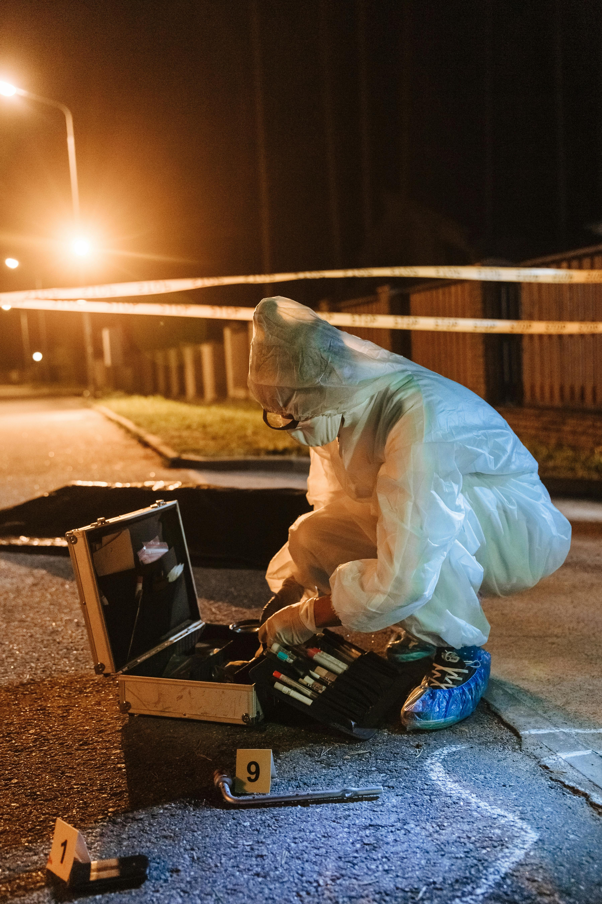

A palavra forense vem do latim forensis, que significa público, fórum. Portanto, ciência forense é a ciência utilizada num sistema judiciário,para finalidades da lei.
Como se Iniciou o Estudo da Ciência Forense?

A utilização da prática forense na investigação criminal é muito antiga e relatos da literatura indicam que Demócrito foi provavelmente o primeiro químico a relatar suas descobertas. Na Roma antiga a forma mais usual de cometer assassinatos ou suicídios era através do uso de substâncias tóxicas, como o arsénio ou através de venenos como os de escorpiões.
Contudo, o progresso da Química Forense iniciou-se mesmo no século XIX. Em 1863, o químico Christian Friedrich Schönbein descobriu o primeiro método confiável para a identificação de sangue humano. Schönbein expôs que ao adicionar peróxido de hidrogênio em manchas de sangue, o local era tomado por uma espécie de espuma.
Qual é o trabalho de um químico forense?
O trabalho de um químico forense é encontrar pistas, rastros, vestígios e determinar os seus significados. Algumas das análises realizadas pelos profissionais dessa área são voltadas à identificação e constituição dos elementos como:
• análises de disparos de armas de fogo;
• revelação de impressões digitais;
• identificação de sangue em locais de crime;
• constatação de substâncias entorpecentes;
e várias outras apreciações que contribuem fortemente para solucionar os crime.
• análises de disparos de armas de fogo;
• revelação de impressões digitais;
• identificação de sangue em locais de crime;
• constatação de substâncias entorpecentes;
e várias outras apreciações que contribuem fortemente para solucionar os crime.



Qual é o princípio básico da Química forense?
Edmond Locard, conhecido como Sherlock Holmes da França, foi um dos pioneiros da Química Forense, e formulou o princípio básico dessa ciência: "Todo contacto deixa uma marca”.
Qual é a mais recente contribuição da química no campo forense?
A mais recente contribuição veio com as técnicas de perfilamento de DNA. Um método capaz de identificar uma pessoa através do código genético com qualquer pedaço de tecido.
Que conhecimentos deve o químico forense possuir ?
O químico forense precisa de ser uma espécie de ‘superquímico’, pois deve possuir conhecimentos em todas as subáreas da Química, e ter a perspicácia necessária para decidir se as análises efetuadas são suficientes para chegar a uma conclusão.
A química forense no mundo continua a crescer e a expandir-se. Assim, quando lês no cabeçalho do jornal que um grande caso foi resolvido e respostas foram obtidas, percebe que químicos, toxicólogos, biólogos, biólogos moleculares, botânicos e geólogos ajudaram a resolver o caso.